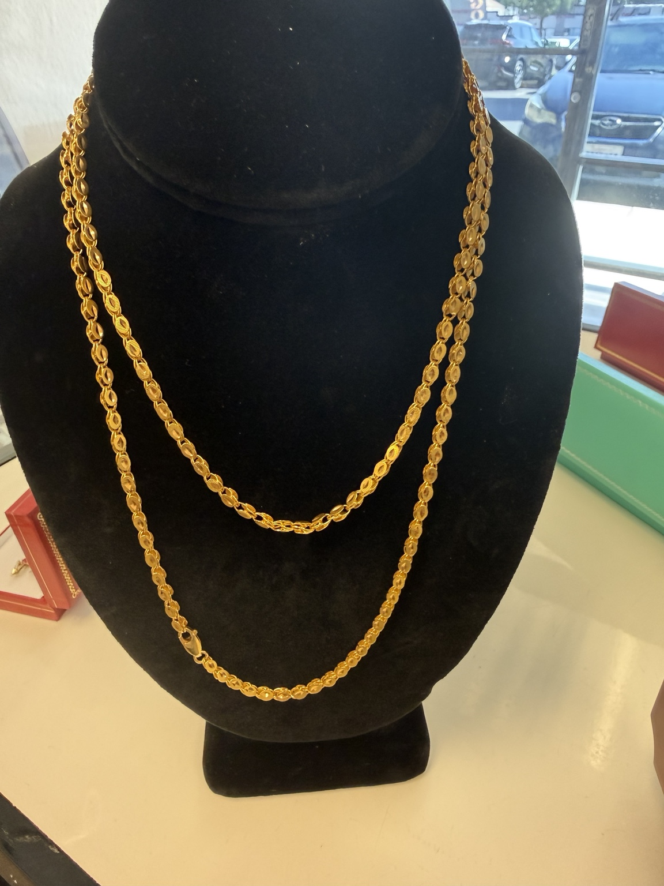
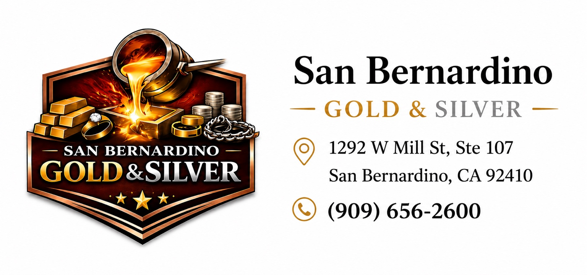
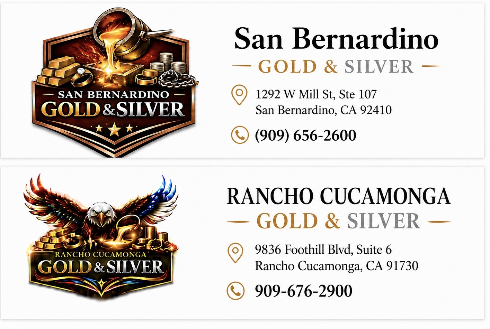

RANCHO CUCAMONGA
RANCHO CUCAMONGAGOLD & SILVER(909) 676-2900
RANCHO CUCAMONGAProfessional methods, clear explanations and testing you can see.

Professional-grade XRF technology analyzes metal composition without damaging the item. X-ray fluorescence measures the elements present in the tested surface.
We use professional precious-metal verification equipment to help evaluate coins and bullion.

Traditional acid testing may be used when appropriate alongside professional equipment.

For appropriate larger lots, we can melt and homogenize precious metals to help determine consistent metal content before an offer. This is assay and melting—not chemical refining.